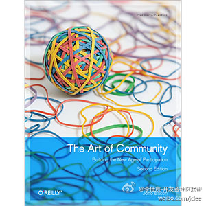

兵马未动，粮草先行。被推着走了哈。[呵呵]//@ben_杜玉杰:恩，这本书@ZoomQuiet 搭好了翻译平台，欢迎加入。@OpenERP_Jeff @开源合作社 @车库开源技术小组 //@catfly廖湘宁:感谢@Ada李力 期待中文
@李佳宸-开发者社区联盟:
通过@微盘 分享文件"The.Art.of.Community.2nd.Edition.pdf" 社区经理们可以看一下，@Ada李力 也在翻译这本书。期待中文版到来。@ben_杜玉杰 @fiona_duan @catfly廖湘宁  网页链接
网页链接
- 